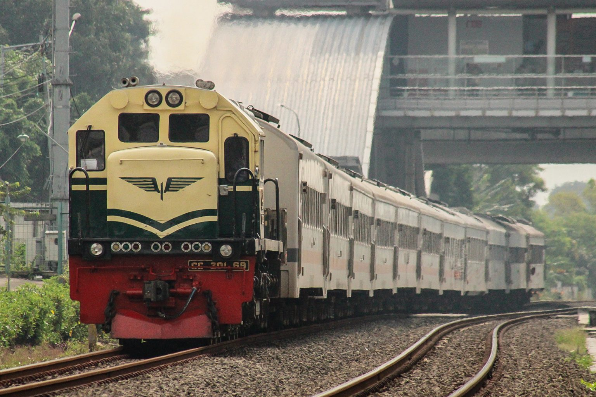

PEMUDA TERTABRAK KERETA DI SIDOARJO

Pemuda Tertabrak KA Sri Tanjung Di Sidoarjo
Seorang pemotor di Sidoarjo tewas tertabrak kereta api (KA) Sri Tanjung. Korban tertabrak diduga karena menerobos palang pintu pelintasan.
Peristiwa tersebut terjadi Rabu (28/5)
sekitar pukul 14.15 WIB di di bawah Flyover Jenggolo. Sedangkan korban adalah M Romli (18) Desa Kelbung Galis Bangkalan Madura.
Korban mengendarai sepeda motor diduga Honda Vario Nopol W 6729 NI, korban diduga penjual makan di sekitar jalan Jenggolo.
Salah satu saksi, Sutikno (38) mengatakan korban nekat menerobos palang pelintasan kereta api padahal palang pintu telah ditutup. Korban mengendarai motor Honda Vario Nopol W 6729 NI.
"Yang jelas palang pintu perlintasan sudah ditutup dan terdengar sirinennya, tapi entah kenapa dari samping saya tiba-tiba pengendara tersebut nekat menerobos," kata Sutikno, Rabu (28/5/2015).

CC 201 83 31 SMC || Pict By Khesya Irwanto
"Akibatnya pengendara tersebut tertabrak Kereta Api dan terpental beberapa meter, terlihat korban meninggal dilokasi," imbuh Sutikno.
Kanit Lantas Polsek Buduran Iptu Subandi saat dikonfirmasi membenarkan peristiwa kecelakaan itu. Saat ini, petugas telah melakukan olah TKP dan mengevakuasi jenazah ke rumah sakit.
"Benar ada peristiwa kecelakaan itu, pengendara motor ditabrak kereta api. Kecelakaan tersebut ditangani oleh Unit Gakum Satlantas Polresta Sidoarjo," kata Subandi.